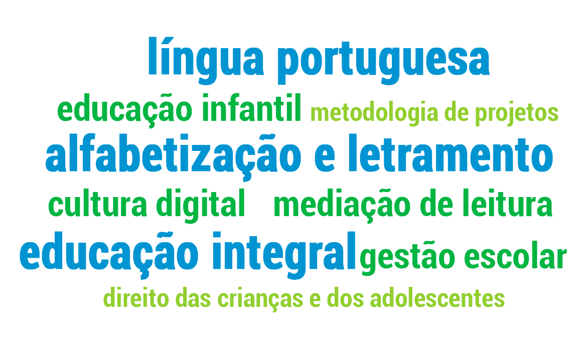

Desde 2001, o Cenpec desenvolve ações e projetos que visam à integração das tecnologias digitais à Educação. Essa integração possibilita a ampliação de acesso à informação e ao conhecimento e, sobretudo, tem o potencial de desencadear inovação nos processos de ensino-aprendizagem ao considerar as novas formas de construção de conhecimento na cultura digital.
Inovação
É a busca da solução de um problema a partir de uma nova perspectiva:
Para inovar, consideramos:
O quê: eixos da aprendizagem - o que ensinar, como ensinar e como se aprende.
Para quem: professor e estudante, impactados por transformações, como mobilidade, rapidez, colaboração, criação de sentidos a partir de múltiplas linguagens, consumo, novas formas de produzir.
Para quê: valores e atitudes para uma sociedade sustentável, participativa e justa.
Cultura digital
O conceito de cultura digital está em constituição, relacionando-se a outros como sociedade da informação, cibercultura e era digital. Cada um deles, utilizado por determinados autores, pensadores e ativistas, demarca esta época, quando as relações humanas são fortemente mediadas por tecnologias e comunicações digitais.
Refere-se à cultura decorrente dos usos da internet e outros aparatos digitais que intermedeiam as relações e as produções humanas, favorecendo trocas e interações entre as pessoas e novos modelos de aprendizagem e meios de expressão. Essa forma de cultura acarreta mudanças de sensibilidades traduzidas em novas maneiras de ler, escrever, expressar e sentir.
Adaptado de: Cultura digital e Ensinar e aprender no mundo digital: fundamentos para prática pedagógica na cultura digital
Dados de contexto
Tecnologia na escola (pesquisa TIC Educação 2016)
Ampliação da EaD na formação
Base Nacional Curricular Comum (3ª versão)
As propostas dos cursos e percursos formativos estão ancoradas na concepção de formação continuada que o Cenpec desenvolveu durante seus 30 anos de atuação, na qual os educadores são considerados como protagonistas, autores e intelectuais que pensam com autonomia sobre suas ações, enfatizando a reflexão sobre a prática docente.
São utilizadas metodologias ativas, promovendo uma formação baseada na interação e na resolução de problemas.
As atividades totalmente a distância são mediadas por um especialista no tema (tutor ou mediador), com devolutivas individuais e coletivas. Geralmente, o curso culmina com uma produção final (propostas didáticas, projetos etc.)
O cursista é responsável por gerir o seu processo de aprendizagem a partir das escolhas que faz ao acessar os conteúdos do curso e da interação com os outros cursistas. A avaliação da aprendizagem se dá por meio de devolutivas automáticas.
Mesclam atividades presenciais e a distância, acompanhadas por um formador. Geralmente, estão atrelados a um programa de formação, como Alafabetização em Foco, Aceleração da Aprendizagem e Parceria Votorantim pela Educação.
São 28 cursos online que abrangem as seguintes temáticas:
Percursos formativos
Trata-se da realização de atividades formativas num ambiente digital, no qual o participante tem autonomia para decidir o trajeto que vai fazer de acordo com seus interesses e necessidades. O percurso de cada participante é registrado pelo sistema, identificando o histórico das atividades realizadas e estabelecendo possíveis certificações.
Percurso formativo Escrevendo o Futuro
https://www.escrevendoofuturo.org.br/percursos
É organizado por eixos de ensino-aprendizagem da língua portuguesa: Leitura, Oralidade e Escrita, em articulação com três aspectos: Contribuições teóricas, Orientações para prática e Recursos didáticos. Os participantes podem elaborar e compartilhar planos de aula e pautas de formação a partir dos conteúdos acessados.
Itinerário formativo Educação&Participação
https://educacaoeparticipacao.org.br
A organização do percurso é por seções da Plataforma Educação&Participação, incluindo estratégias de gameficação, como pontuação para cada atividade realizada e certificação dessa participação, para criar uma forma de engajamento e promover uma conscientização sobre as escolhas e aprendizados.
Percurso formativo Respostas para o Amanhã
https://respostasparaoamanha.com.br/professores
Está organizado em três eixos: Saber, Fazer e Interagir. Trata-se de um conjunto de textos, vídeos e atividades que aprofundam as temáticas do Prêmio, como sustentabilidade e conhecimento científico, e apoiam a prática dos professores do Ensino Médio das escolas públicas.
Cultura digital nos cursos e percursos formativos
- Práticas colaborativas de escrita com uso de ferramentas digitais
- Vídeos interativos
- Georreferenciamento com dispositivos móveis
- Construção colaborativa de base de dados
- Gameficação
Os objetos digitais de aprendizagem (ODAs) são definidos como recursos digitais utilizados para apoio ao aprendizado, podendo ser vídeos, animações, infográficos interativos, jogos, e-books etc. Veja alguns exemplos produzidos pelo Cenpec.
Material pedagógico (formação de educadores)
Das primeiras letras aos multiletramentos: caminhos na história brasileira
Clique aqui para acessarAprendizado inicial da escrita: uma proposta de sistematização
Clique aqui para acessarRecursos didáticos (uso com alunos)
Jogos de aprendizagem
Plataforma do Letramento
Refresca Cuca
Clique aqui para acessarConquista da palavra
Clique aqui para acessarAtaque das letras zumbis
Clique aqui para acessarJogo da ortografia
Clique aqui para acessarEscrevendo o Futuro
Poema
Clique aqui para acessarMemórias literárias
Clique aqui para acessarCrônica
Clique aqui para acessarArtigo de opinião
Clique aqui para acessarPortfólios digitais
Os portfólios digitais são utilizados para registrar o processo de desenvolvimento de atividades ou projetos por meio da inserção de textos, imagens, vídeos e áudios.
Mochilão - estudantes participantes do Prêmio Respostas para o Amanhã registram todo o processo do projeto que desenvolvem na escola.
Portfólio Jovem - pelo celular, jovens participantes do Projeto Jovens Urbanos compartilham os locais da cidade que visitam, as experimentações que realizam e os projetos desenvolvidos.
 28 cursos online produzidos
28 cursos online produzidos
65.000 inscritos em cursos online (entre 2011 e 2017)
50% dos participantes certificados nos cursos online
448.600 cadastrados em nossas Plataformas digitais (maio 2018)
195.000 usuários inscritos em nossas redes sociais digitais